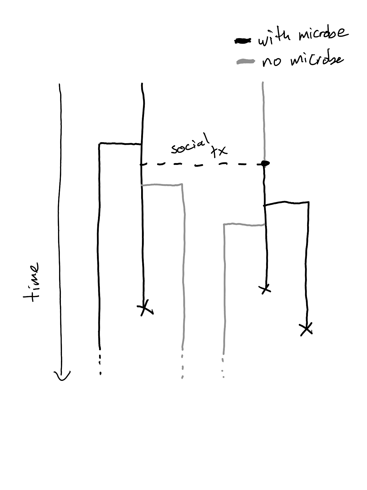

Modelling Host-Microbiome Interactions
Microbiomes mediate host trait variation

Can Microbiomes facilitate adaptation?

- Lewontins Conditions \(\uparrow\) for evolutionary adaptation
But microbiomes not like nuclear genes…

- Community assembly (microbial dispersal, within-host selection, etc …)
Maternal Effects

Definition:
influence of parent trait on offspring trait
Indirect Genetic Effects
Definition:
genotype of one individual influences trait of another individual

Niche Construction

Definition 1:
organism activity alters environment
Definition 2:
organism activity alters selection pressures
Two perspectives:
microbiome as environment
microbiome modifying environment
Microbiome Mediated Rescue of Host Populations



Quantitative Genetics of Microbiome Mediated Traits
Host Trait Variance Partitioning
\[P=G+M+E\]
- \(P\) … phenotypic variation
- \(G\) … explained by genetic var
- \(M\) … explained by microbiome var
- \(E\) … explained by other stuff
Microbiome Partitioning
\[M=M_L+M_N+M_V\]
- \(M_L\) … lineal microbes
- \(M_N\) … non-lineal microbes
- \(M_V\) … novel microbes
Predictions
- \(M_L\) ~ most adaptive potential
- \(M_N\) ~ less adaptive potential
- \(M_V\) ~ least adaptive potential